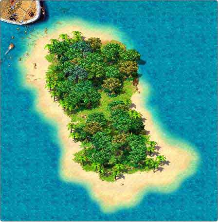
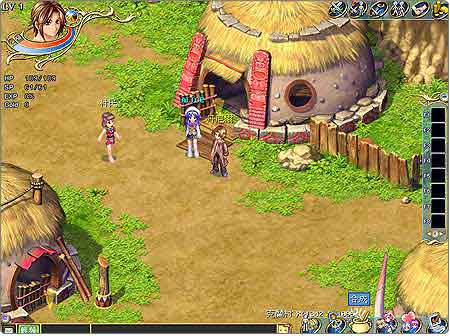
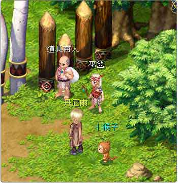
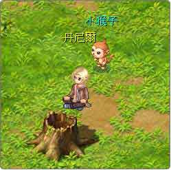

新手必看
| 1. 新手岛 |
| 玩家在新手岛上会意外发现一个特别人物，竟是漂流到荒岛二十八年的鲁宾逊！玩家可以在那里得知很多新手的入门指南，并且透过鲁宾逊的指引，乘坐初期交通工具离开小岛。 |
|
 |
| 2. 新手必玩的克兰村 |
| 克兰村是玩家上岸后第一个接触到的村落，村中除了给新手小试一下的简单任务外，当然还有一些重要讯息透露给玩家，至于是什么样的内容，那么就请玩家们亲自去体会吧！ |
|
 |
| 3. 想要买卖东西？该找谁呢？ |
| 在游戏中买卖道具、装备要找谁呢？当然是道具商人和武器商人啦！道具商人提供玩家买道具、卖物品。而武器商提供玩家买武器、卖装备。当玩家看到这二个造型独特的商人，不要错过喔！ |
|
 |
| 4. 游戏中多样化的功能 |
| 游戏中合并了多样功能，合成、补捉、骑乘、快递、钓鱼、交友。合成是玩家在不想花钱，想获得装备、或道具的好方法。捕捉可是有小技巧的呢！喜欢带着宠物到处跑的玩家们，可千万不要忘了去试试这项功能，除了带着宠物到处跑以外，骑乘在各式各样的宠物上是不是很有趣呢。快递和交友这二样功能，对玩家来说很贴心，快递可派宠物送礼给自己的伙伴或知心好友，所以当玩家看到宠物跑来跑去时，别太意外喔！而交友功能对不善交际的玩家可是一大福音。钓鱼，在玩家一贫如洗，又很缺食物或道具时，可是个补足货源的好方法喔！ |
| 5. 当角色死亡时… |
| 一般情况下玩家会在原地重生。另外还要注意的一点是，在游戏接口的系统选项中有个回重生点的选项，点选之后可以回到玩家最近一次的储存记录点。 |
| 6. 当玩家需要补充体力时 |
| 受伤的时候，除了吃一些补血的食物外，亦可以使用交友情感接口中的情感动作栏，选取坐下的动作，即可慢慢回复体力。当然啦！玩家们也可以至村庄中的旅馆休息，花少许的金钱，即可马上回复体力喔！ |
|
 |
| 7. 要怎么收集材料呢？ |
| 当然是不要放弃收寻任意一个地方啦！宝箱、木箱、木桶、陶瓶等等之类的物品，将它们打破就可以拿走里面的物品。或是去打怪物练功所掉的宝物，都是您获得各种丰富资源的好方法！ |